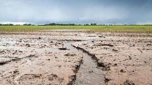

Depuis l'antropisation massive de la planéte, l'Homme a un impact majeur sur les milieux et donc sur les espèces animales et végétales. En effet, les populations ne cesssent de diminuer pour la plus part d'entre elles. Cette partie a pour but de montrer quelques données pour mettre en évidence le bilan de l'évolution de la faune et la flore. Par exemple, le graphique ci-dessous montre le nombre d'éspèces ayant disparu depuis les années 1500 à nos jours.
Les scientifiques sont amenés à se poser la question si la 6éme perte de biodiversité et l'extinction de certaines espèces seraient causées par l'Homme. En effet, les activités antropiques telles que l'industrie, l'urbanisation, l'agriculture, le prélèvement de ressources renouvelables et non renouvelables ou encore le transport et la consommation d'énergie amènent l'homme à faconner son territoire. Cela a de nombreuses conséquences comme l'artificialisation des sols, l'impermeabilisation des sols, l'érosion, les émissions de gaz à effet de serre, la pollution, la chute de la biodiversité ou encore la modification des espaces par exemple. 
La carte intéractive ci-dessus illustre des exemples d'animaux menacés, en danger, vulnérables selon les pays. On constate qu'elles sont nombreuses et réparties sur l'ensemble du globe. En effet, le taux de biodiversité et le nombre d'espèces ne cessent de diminuer à l'échelle du globe. Ci-dessous des exemples détaillés d'espèces menacées.
Depuis que l'Homme n'est plus chasseur-cueilleur et est devenu sédentaire, il a eu besoin d'exploiter son territoire pour survivre en le modifiant : agriculture, élevage, urbanisation ... Les activités anthropiques sont gourmandes en espace et sont nécessaires à notre survie (même si certaines formes pourraient s'améliorer afin de limiter les impacts dévastateurs) . Ci-dessous des graphiques représentatifs des formes de consommation des terres par l'Homme.
created with
HTML Website Builder .